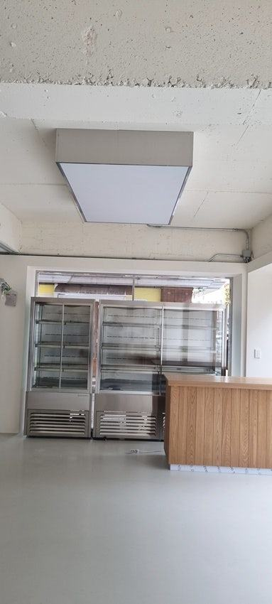
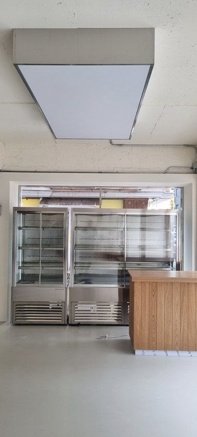
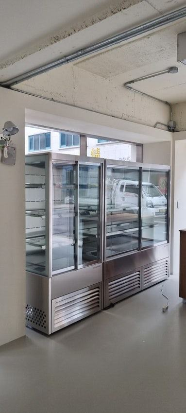
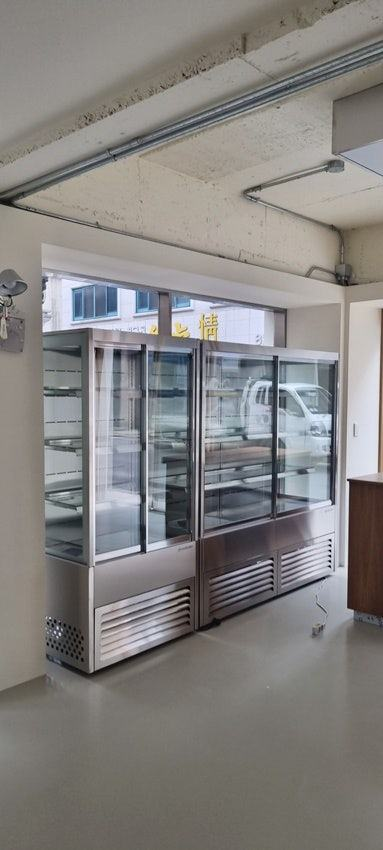
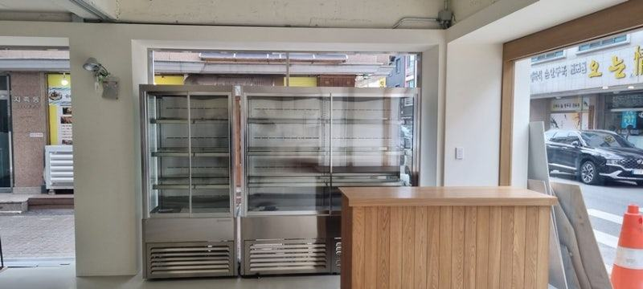
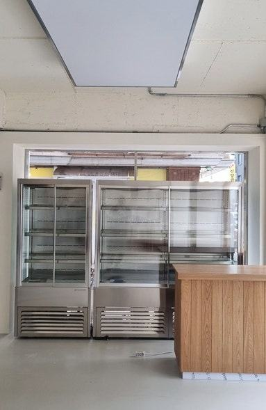
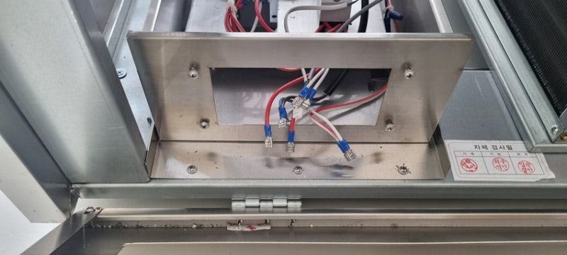
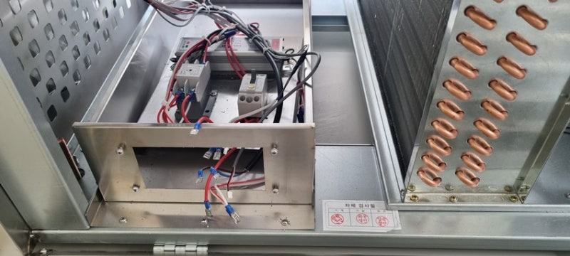
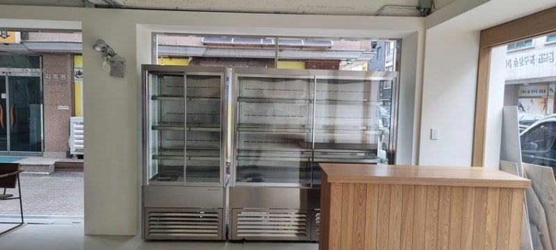
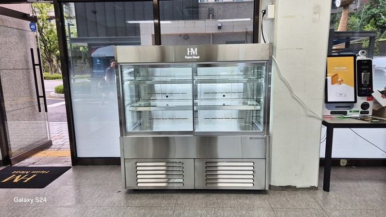

정육쇼케이스
정육쇼케이스 렌탈, 계약서에 사인하기 전 볼 조건

정육쇼케이스 렌탈은 고장 났을 때 누가 언제 오는지, 매장 폭에 맞는 규격을 고를 수 있는지, 계약이 끝난 뒤 제품이 어떻게 되는지 세 가지가 계약서에 분명할 때만 고려할 만합니다. 셋 중 하나라도 흐리다면 오래 쓸 매장은 맞춤 구매와 함께 비교해 보시길 권합니다.
안녕하세요. 정육점 사장님들과 오래 일해 온 쇼케이스 제작사, 한성쇼케이스입니다.
창업 비용을 계산하다 보면 냉장 설비 비중이 커서 "정육쇼케이스는 렌탈로 시작하면 어떨까" 하는 생각이 드시죠.
매달 나눠 내니 당장 목돈이 덜 들고, 고장 나면 업체가 알아서 고쳐 줄 것 같은 기대도 있습니다.
다만 정육은 아주 작은 온도 변화에도 색이 변하고 육즙이 빠지는 상품입니다. 렌탈이든 구매든 결국 쇼케이스가 멈춘 그날 고기를 지킬 수 있느냐가 핵심입니다.
오늘은 렌탈 계약서를 받으셨을 때 꼭 짚어 봐야 할 조건과, 구매와 비교하는 기준을 정리해 보겠습니다.
1. 고장 대응 조건이 계약서의 중심입니다
렌탈 계약에서 가장 먼저 보셔야 할 항목은 월 납입액이 아니라 고장 났을 때의 대응 방식입니다. 접수 후 몇 시간 안에 기사가 오는지, 주말과 새벽에도 접수가 되는지, 수리 기간 동안 대체 장비를 주는지가 적혀 있어야 합니다.
정육점은 쇼케이스가 반나절만 멈춰도 진열한 고기를 다른 곳으로 옮기거나 폐기해야 합니다. 이 손실을 누가 부담하는지 계약서에 언급이 없다면, 결국 사장님 몫이라고 보셔야 합니다.
- 접수 가능 시간과 방문 소요 시간을 확인하세요.
- 수리 중 대체 장비 제공 여부를 물어보세요.
- 고장으로 생긴 상품 손실 처리 조항이 있는지 보세요.
2. 규격을 고를 수 있는지
렌탈 상품은 대부분 정해진 몇 가지 규격 안에서 고르게 됩니다. 정육점은 저울 자리, 포장대, 뒤에서 고기를 채우는 작업 동선이 쇼케이스 길이와 맞물려 있어서 규격이 조금만 어긋나도 매장 전체 배치가 흔들립니다.
또 정육은 조명 색과 진열 높이에 따라 고기 빛깔이 달라 보이는 상품입니다. 렌탈 품목에서 조명 색이나 앞유리 형태를 바꿀 수 없다면, 매장 콘셉트와 맞는지 실제 제품을 보고 판단하시는 것이 좋습니다.


3. 계약 기간과 종료 후 처리
렌탈은 약정 기간이 길수록 월 부담이 낮아지지만, 그만큼 중도 해지 위약금도 커집니다. 매장 이전이나 업종 변경 가능성이 있다면 해지 조건을 먼저 읽어 두셔야 합니다.
계약이 끝난 뒤 제품이 사장님 소유로 넘어오는지, 반납해야 하는지도 중요합니다. 반납 조건이라면 기간 동안 낸 금액을 합산해 같은 기간 쓸 제품을 구매했을 때와 비교해 보세요.
설치된 제품이 신품인지 재생품인지도 계약서에 적혀 있는지 확인하실 부분입니다.
- 약정 기간과 중도 해지 위약금
- 종료 후 소유권 이전 또는 반납 조건
- 설치 제품이 신품인지 여부
4. 오래 쓸 매장이라면 구매도 같이 비교하세요
정육쇼케이스는 한 번 들이면 오랜 기간 매장 한가운데를 지키는 설비입니다. 같은 자리에서 길게 영업하실 계획이라면, 매장 폭에 맞춰 제작한 제품을 구매하고 사후관리 체계가 갖춰진 곳을 고르는 편이 결과적으로 관리하기 편한 경우가 많습니다.
어느 쪽이든 판단 기준은 같습니다. 고장 났을 때 빨리 와 줄 수 있는 서비스망이 있는지, 내 매장 동선에 맞는 크기와 조명을 쓸 수 있는지 두 가지를 놓고 비교해 보세요.
체크리스트
- 고장 접수 시간과 방문 소요 시간
- 수리 중 대체 장비와 상품 손실 조항
- 매장 폭에 맞는 규격 선택 가능 여부
- 중도 해지 위약금과 약정 기간
- 계약 종료 후 소유권 처리
- 같은 기간 구매 시 총비용 비교
현장에서 자주 보는 경우: 초기 비용 때문에 장비 선택이 흔들릴 때
정육점을 처음 여시는 사장님들은 비용 부담 때문에 중고나 다른 방식을 먼저 알아보시는 경우가 많습니다.
하지만 상담을 진행해 보면 결국 고장 났을 때 영업이 멈추는 문제를 가장 크게 걱정하십니다.
정육냉동고와 쇼케이스는 매장의 핵심 설비라, 저희는 전국 240여 개 A/S 네트워크와 정육 장비를 맡는 엔지니어의 직접 방문으로 이 부분을 대비하고 있습니다.
본사가 자재를 대량으로 매입해 자체 라인에서 생산하는 것도 초기 부담을 덜어 드리기 위한 방법입니다.










자주 묻는 질문
렌탈 제품도 매장 크기에 맞춰 바꿀 수 있나요?
렌탈 상품은 정해진 규격 위주라 업체마다 다릅니다. 매장 폭이나 조명 색을 꼭 맞춰야 한다면 맞춤 제작 구매와 함께 견적을 비교해 보시는 편이 좋습니다.
렌탈과 구매 중 어느 쪽이 유리한가요?
짧게 운영해 볼 매장이라면 렌탈이, 같은 자리에서 오래 영업할 매장이라면 구매가 맞는 경우가 많습니다.
약정 기간 동안 내는 총액과 종료 후 소유권을 함께 따져 보세요.
구매하면 고장 대응은 어떻게 받나요?
한성쇼케이스는 전국 240여 개 A/S 센터를 운영하고 있어 지방 매장도 접수 후 가까운 곳에서 대응합니다.
사용 중 이상이 느껴지면 대표전화 031-986-2458로 먼저 연락 주세요.
매장 조건에 맞춰 만드는 한성쇼케이스
원하시는 제품 사진과 설치할 공간 사진만 보내 주셔도 매장에 맞는 구성을 추천해 드립니다.
- 전국 240여 개 A/S 전담 센터 운영
- 본사 대량 자재 매입으로 품질 대비 합리적인 가격
- 유럽제·삼성 냉각 콤프레셔 적용
- 국내 최초 쇼케이스 전문 디자이너 상주
매장 폭과 원하는 진열 구성을 알려 주세요. 실측과 견적을 안내해 드립니다.
031-986-2458